Writing the document-based question
DBQ Guides
One guide for every point on the 7-point DBQ rubric, built from College Board scoring guidelines and real scored student samples. Each one shows what earns the point, what doesn't, and a step-by-step way to get it.
Start here
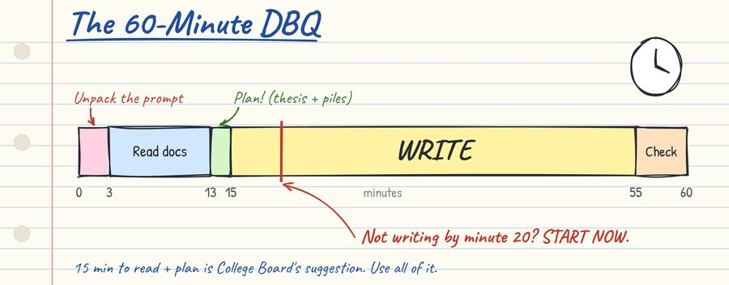
The whole essay
DBQ Strategy Cheat Sheet
How to spend your 60 minutes, unpack the prompt, sort the documents into piles, plan in two minutes, and build the essay paragraph by paragraph. Ends with the traps to avoid and a final 5-minute check.
One guide per rubric point
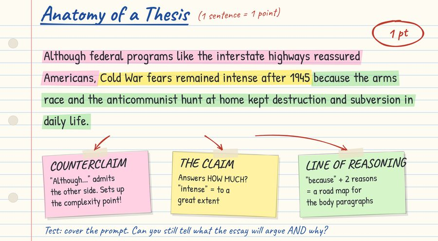
1 · Thesis / Claim
1 ptA defensible claim that answers how much, with a line of reasoning. The "Although… because…" formula.
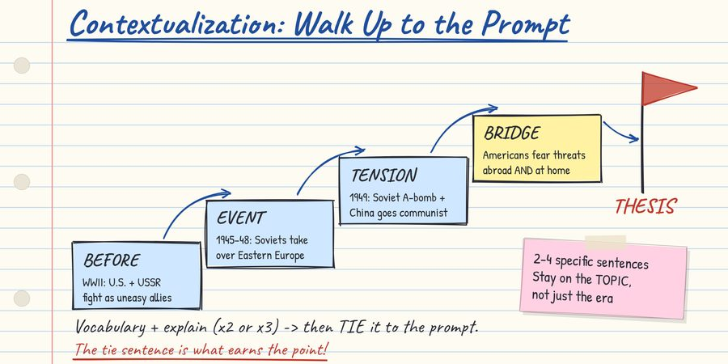
2 · Contextualization
1 pt2–4 specific sentences that walk the reader up to the prompt, then tie it to your topic.
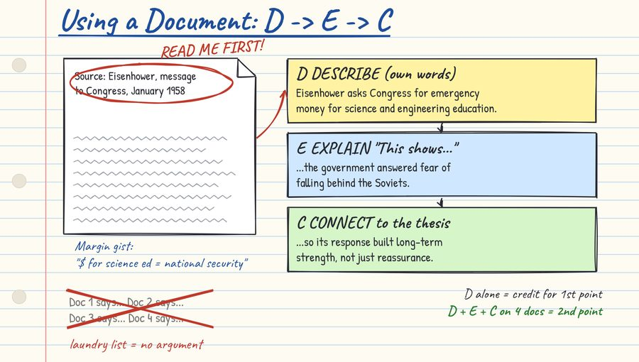
3 · Evidence from the Documents
2 ptsDescribe, Explain, Connect: describe 3 documents for one point; use 4 to support your argument for two.
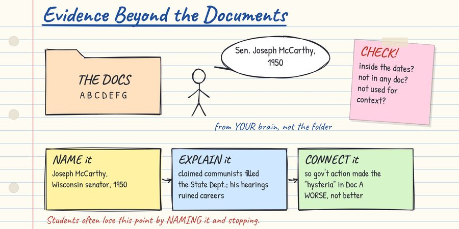
4 · Evidence Beyond the Documents
1 ptOne specific example that's not in any document: name it, explain it, connect it.
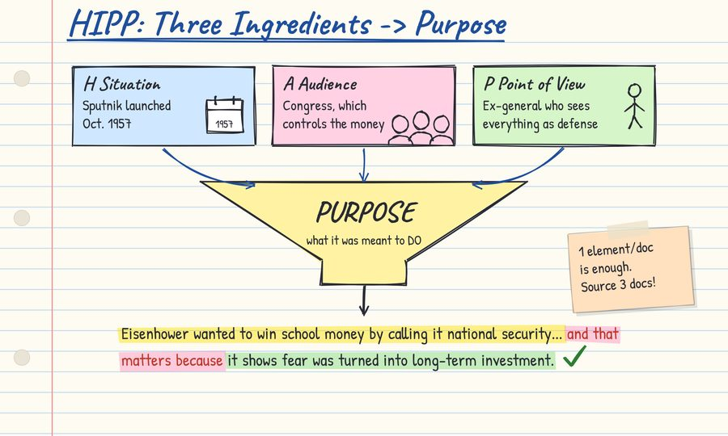
5 · Sourcing (HIPP)
1 ptExplain why a document's situation, audience, point of view, or purpose matters, for 2 documents.
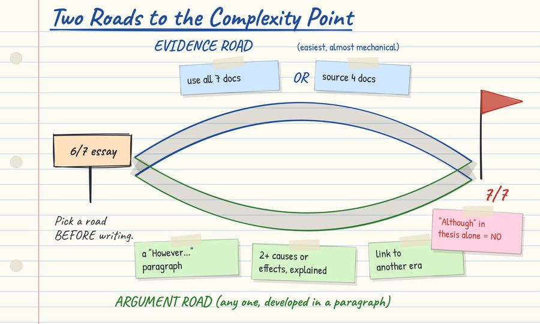
6 · Complexity
1 ptThe hardest point, two ways: use all 7 documents or source 4, or argue the other side.
Sourcing deep dives: H · A · P · P
Situation, audience, and point of view usually explain the fourth piece, purpose. One element per document is enough.
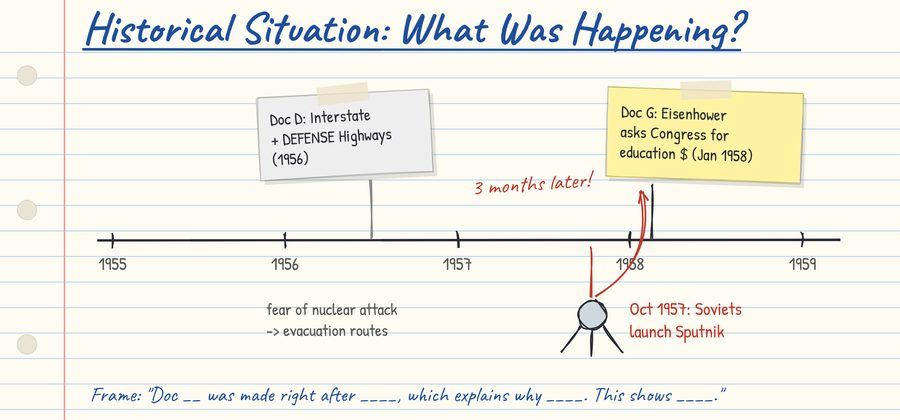
H · Historical Situation
What was happening when the document was made, and why that moment produced it.
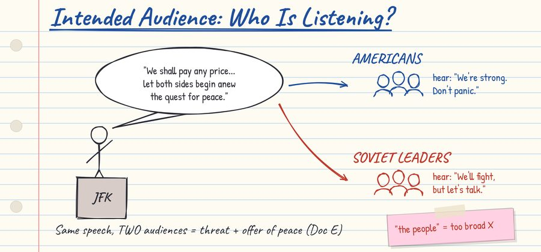
A · Intended Audience
Who the author needed to reach, and how that shaped the message.
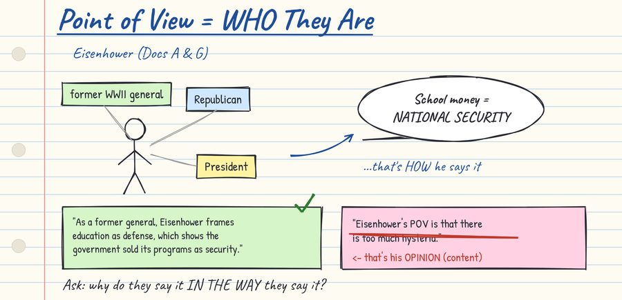
P · Point of View
Who the author is, and why that makes them say it the way they say it. Not their opinion.
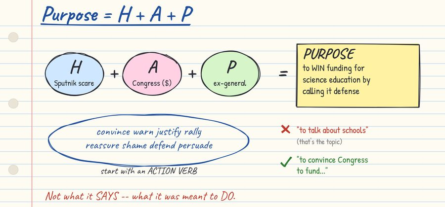
P · Purpose
What the document was meant to do, built from the other three.